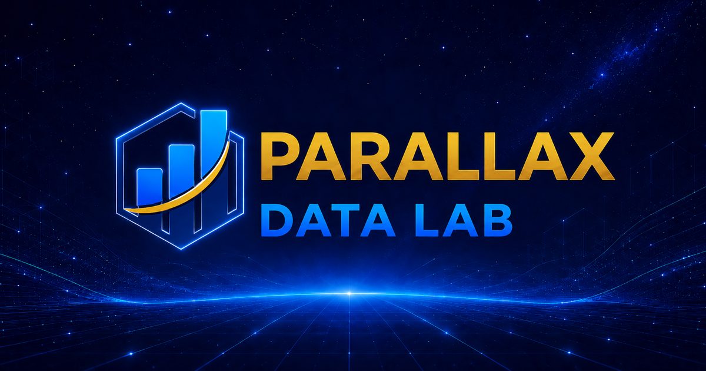

Teams rebuild similar dashboards for executives, site leaders, finance, partners, and restricted audiences.

Customer demo
Governed analytics command center
Parallax Data Lab governed access simulator
Show how Row Level Security (RLS) changes operational risk reporting by site.
Build one governed report experience instead of maintaining a separate dashboard for every user, team, or permission pattern.
RLS enabled
0 of 0 rows visible
Policies are filtering the report.
Demo path
Show the same report through different permissions.
Start with Andre, turn RLS off, then open Access audit to explain the decision trail.
The same report adapts automatically based on identity, scope, domain entitlement, and sensitivity.
Developers maintain fewer assets and users get a cleaner, safer reporting experience.
Scenario
Operational analytics
Reporting lens
Safety risk
Select a lens to see how RLS changes the report.
Safety operations
Incident risk available to selected user
Data product
Site safety events
| Record | Site | Domain | Risk score | Sensitivity | Policy result |
|---|
How it gets applied
RLS turns identity into report-specific filters
1. User signs inRole, site scope, domain, and clearance are resolved.
2. Data is classifiedRows carry site, business domain, owner, and sensitivity tags.
3. Policies compileRules translate those tags into filters and masks.
4. Reports inherit controlsEvery dashboard query returns only approved records.
Access audit